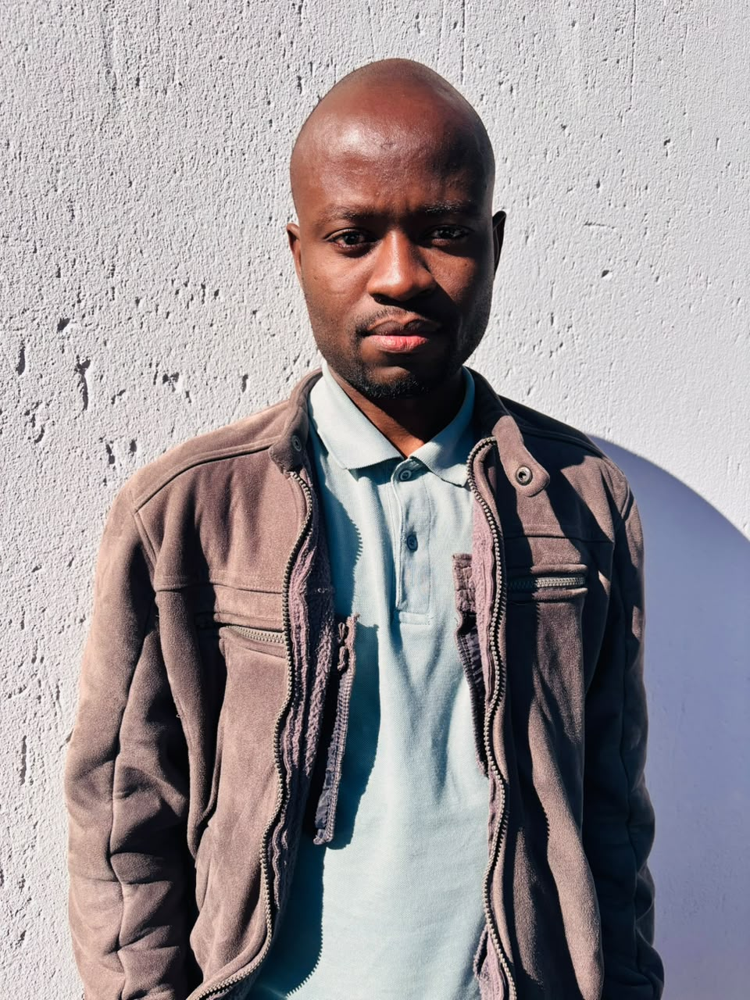

$ whoami
Mqondisi Mathuthu
I'm a network engineer who lives in the space between carrier-grade routing and modern automation. My CCNP Service Provider background means I'm comfortable at the deep end — full BGP tables, MPLS label-switched paths, VPNv4 route-target design — while my Python and Ansible work means I'd rather script a change across 40 routers than paste it 40 times.
Day to day I run a hybrid SP/enterprise network of 200+ devices across 5 regional PoPs: Cisco ASR, ISR and Nexus platforms fronted by FortiGate firewall clusters. I'm an early adopter of AI-assisted workflows — from Copilot-accelerated scripting to LLM-powered log summarisation during outage calls.
Comfortable with on-call rotations, late-night change windows, and being the person who writes the post-incident review afterwards.
$ traceroute career | tracing route, most recent hop first
Building an ISP from scratch
An end-to-end virtualised ISP: Cisco MPLS core, MikroTik access layer, and FortiGate-managed security, built to mirror a real carrier topology.
in progress — write-up coming
MPLS · Ansible
A 6-PE / 2-P / 4-CE lab in EVE-NG running OSPF + BGP + MPLS LDP + VPNv4, with validated designs translated to production via Ansible templates.
3 customer VRFs onboarded, zero downtime
Python · Fortinet API
A Python + fortiosapi tool that scans firewall policies for shadowed or unused rules, generates a cleanup report with suggested merges, and pushes approved changes via API.
rule count −30%, throughput up
AI · Slack bot
A Slack bot that ingests BGP outputs, sanitises them, and uses an LLM to flag flapping prefixes, diagnose likely causes, and propose route-map or prefix-list fixes.
adopted by 4 NOC engineers
Lab · EVPN
A multi-vendor EVPN/VXLAN fabric with FRR and VyOS, built to go deeper on type-2/3/5 routes and MAC-VRF behaviour beyond the day job.
in progress — write-up coming